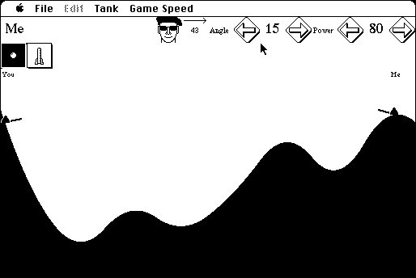

Download
battle_tanks_2.12.zip (57K) BattleTanks 2.12 repackaged into a zipped hfs disk image and checksum file. The disk image can be mounted with Mini vMac.
battle_tanks_2.12.sit (57K) BattleTanks 2.12 in the original format.
copyright: Niklas Frykholm
mod date: Jan 27, 1995
license: shareware
official url :
Battle Tanks
Artillary game.

If you find these downloads useful, please consider helping the Gryphel Project, which hosts them.
Here are the md5 checksums for the downloads, signed with Gryphel Key 5:
--------- GRY SIGNED TEXT --------- 919edafef2d6a71506453c61fbe87fe3 battle_tanks_2.12.zip b741a289d0231858d3f32a4cf7b3c131 battle_tanks_2.12.sit ------- BEGIN GRY SIGNATURE ------- Gry/4Xa8CFcUzxdN/H0x5RybC3f3THJKV+YQSep+ehqiXU+VhpWZn/TsfKolYpbP V/V8VArh1DrW/7+S3mBHKuoJthXX0kxUoJfaDroqetauifjw3oh9jj/ZvCx54DRl rU1ynQBlo1wkyK/E4nn2CwiJ/Iwzxld6kjp1aYjPZDOCyaLqtMVf8+OPRZQbO2sW -------- END GRY SIGNATURE --------